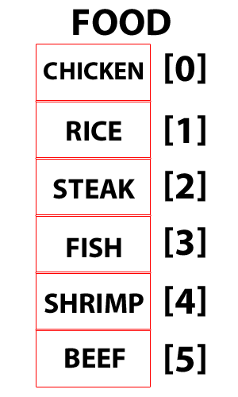

Taniya Prabhakar


Thoughts & Opinions
Hash or Array?
& not other tough decisions
02/20/2015
Hashes and Arrays are both extremely useful and essential indexed collections. The way I imagine hashes and arrays are as large treasure chests. Inside each of these are rows of smaller treasure chests. In a hash chest, each inner chest contains a value, but is locked. To get the value, you need to open the lock with a key. In an array chest, there isn't a lock that needs to be opened. Instead, the inner chests have large numbers printed outside, called the index key. This is why the way you access each indexed collection is different.
When you want to get a value from an array, you use the index key (from 0 to one less than the length of the array), to get the value stored in the chest. With this method, you cannot specify the keys. The keys are always an integer. Referencing the image below, if you wanted to get rice you would use '1' for the key to get the value 'rice'.
When you want to get a value from a hash table, you use your keys. This key works similar to real life keys as you use it to unlock and get you to the value you're looking for. You can specify the key in a hash to be an integer, string, or any other object., hence providing more flexibility. As in the image below, you can use the string "name" as a key to search for the value corresponding to it.